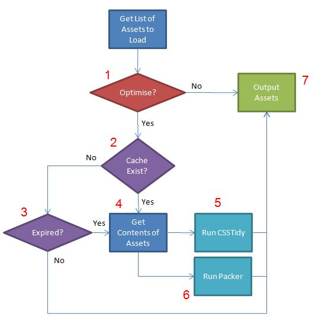

Asset 优化
Asset Library 有能力为你的用户优化assets. 如果允许这个process ,就会将所有assets整合成一个文件. 然后它会使用优化插件（如果有的话）来优化这个文件,然后存储一份这个新文件的副本至asset缓存. 这表示用户将接收到最小体积、最高效率的asset文件,同时保证asset文件的可读性，以有利于开发.
通过吧assets整合成单个文件，减少了你的用户针对HTTP请求的数量，这样就加速了页面的加载时间.
Note: 在尝试Asset优化之前，请确保 assets/cache/ 是可写的.
Process
步骤
- 优化:
在 Asset Library 配置文件里有一个设置是 optimise_assets. 如果你想要优化的话，这里必须设置成 TRUE. 如果设置成 FALSE 那么请求的assets仅仅就是程序所输出的.
- 检测缓存是否存在:
针对每个asset的类型 (CSS 或 JS) 以及每个位置 (header 或 footer)，它会检查在给定的asset缓存目录下是否存在一个asset文件.
- 检测缓存是否过期:
如果缓存存在, 检查是否太老. 这个值是在Asset Library 的配置文件里的叫做 asset_caching/expire_time 的配置项目设置的. 这是缓存asset文件的保持时间（小时为单位）. 过了这个时间，缓存目录下的老asset缓存就会被清除，然后创建新的缓存.
- 获取Assets内容:
这个process 会迭代所有指定的assets，并且将其全部整合成一个单个的asset文件. 请阅读 Asset Array 配置设置获取更多关于动态assets和这种情况下如何处理它们的信息.
- 运行 CSS 优化:
如果一个CSSTidy 被指定来执行优化器, 请见CSS Compression.
- 运行 JS 优化:
如果一个JS Packer 被指定来执行优化器, 请见 JS Compression.
- 输出 Assets:
依赖于是否存在缓存. 所有页面所需要的asset文件都被要么输出至header要么输出至footer，正如所required的.